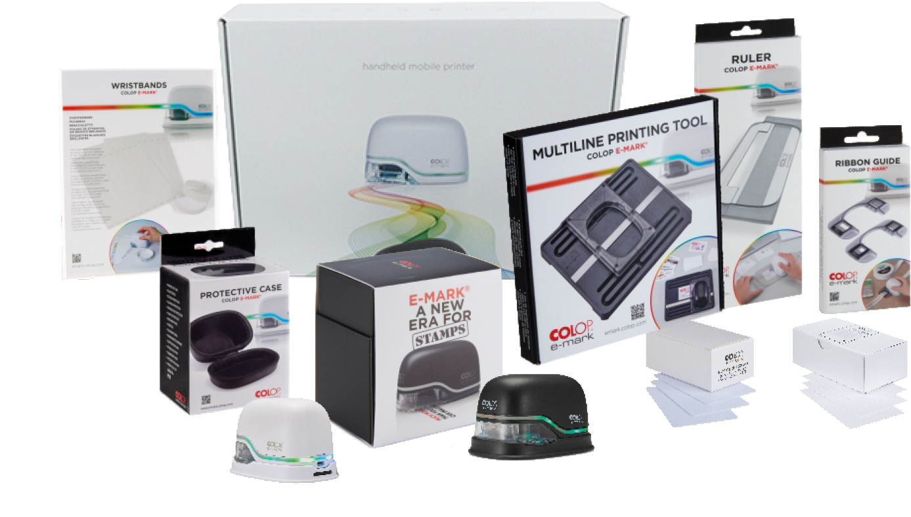

e mark
The COLOP e-mark is a useful tool in many industries. It is ideally suited for use in offices, hotels and restaurants, in event and agency management, in law offices, in healthcare organisations as well as for inspection and controlling purposes. Numerous accessories and an extensive label range make using the e-mark even easier and a practical device for a wide range of applications.
Flip through our e-mark catalogue to find out how you could use it in your business.
The COLOP e-mark is a useful tool in many industries. It is ideally suited for use in offices, hotels and restaurants, in event and agency management
Flip through our e-mark catalogue to find out how you could use it in your business Flip through our e-mark catalogue to find out how you could use it in your business Flip through our e-mark catalogue to Europen Office Product Award find out how you could use it in your business Flip through our e-mark catalogue to find out how you could use it in your business.
Flip through our e-mark catalogue to find out how you could use it in your business Flip through our e-mark catalogue to find Europen Office Product Award out how you could use it in your business Flip through our e-mark catalogue to find out how you could use it in your business Flip through our e-mark catalogue to find out how you could use it in your business.
Flip through our e-mark catalogue to find out how you could use it in your business Flip through our e-mark catalogue to find out how you could use it in your business Flip through our e-mark catalogue to find out how you could use it in your business Flip through our e-mark catalogue to find out how you could use it in your business.
Flip through our e-mark catalogue to find out how you could use it in your business Flip through our e-mark catalogue to find Europen Office Product Award out how you could use it in your business Flip through our e-mark catalogue to find out how you could use it in your business Flip through our e-mark catalogue to find out how you could use it in your business.
Flip through our e-mark catalogue to find out how you could use it in your business Flip through our e-mark catalogue to find out how you could use it in your business Flip through our e-mark catalogue to Europen Office Product Award find out how you could use it in your business Flip through our e-mark catalogue to find out how you could use it in your business.
Flip through our e-mark catalogue to find out how you could use it in your business Flip through our e-mark catalogue to find out how you could use it in your business Flip through our e-mark catalogue to find out how you could use it in your business Flip through our e-mark catalogue to find out how you could use it in your business.
Flip through our e-mark catalogue to find out how you could use it in your business Flip through our e-mark catalogue to find Europen Office Product Award out how you could use it in your business Flip through our e-mark catalogue to find out how you could use it in your business Flip through our e-mark catalogue to find out how you could use it in your business.
Made for your Business
The COLOP e-mark is a useful tool in many industries. It is ideally suited for use in offices, hotels and restaurants, in event and agency management, in law offices, in healthcare organisations as well as for inspection and controlling purposes. Numerous accessories and an extensive label range make using the e-mark even easier and a practical device for a wide range of applications.
General